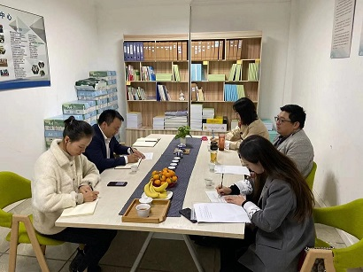

2019年10月28日，继续教育学院党总支副书记李林一行三人前往我校成教站点“德阳连邦软件专修学院”、自考助学站点“山东亚太高等教育培训中心”，就进一步强化党的基层组织建设，如何提升继续教育管理质量和服务水平，更好地促进下一阶段的合作开展了调研活动。

李书记一行参观了两个站点的办学条件后，德阳连邦软件专修学院和山东亚太高等教育培训中心的负责人分别从办学情况、招生宣传、管理措施、规章制度、教学条件、人员配备、师资队伍、学生管理与服务等方面作了详细的汇报。该站点负责人表示，在办学过程中，能严格按照学校的相关要求，坚持正确的办学方向，树立以人为本的工作管理理念，本着对学生高度负责的态度，尽力解决学生的问题与困难，重视管理队伍的建设，定期开展管理人员的思想素质和业务能力的培训，促进站点长期稳定的发展。在工作中，站点的工作人员得到了继续教育学院各科室老师的大力支持，能够相互配合，积极沟通，顺利完成相关业务工作。同时，站点负责人也对学院在线上教学、毕业证档案等方面提出了建议。
听完站点负责人的汇报后，李书记对站点的总体工作表示认可，并就办学、教学等方面提出了几点要求，一是严格按照省教育厅、省考试院及学校的相关要求进行招生宣传活动，严禁虚假与不实承诺，严禁与全日制本科混淆宣传，误导学生；二是严格按照学校的相关要求运行各项工作，以学生为本，建立班级制度，组建班委，设置相应辅导员，让学生有进入高校学习的归属感；三是在教学活动中，回归教育本质，充分发挥站点所起到的作用，实实在在为学生做好服务和助学工作；四是学校的声誉需要双方共同维护，不能做有关损坏学校声誉的行为；五是在合作中，希望站点与学院多沟通、多交流，积极反应办学中的困难与建议，共同解决办学瓶颈。
通过本次调研活动，学院班子深入了解了我校继续教育一线办学实际情况，科学掌握联合办学单位和考生的真实需求，深刻剖析我校继续办学的难点与痛点，积极听取各方对继续教育的建设性意见，从学生实际、联合办学单位实际出发，遵循继续教育办学规律，不忘“服务学生”的初心，牢记“人才培养”使命，实现新时代川师大继续教育新发展。
（微信扫描分享）